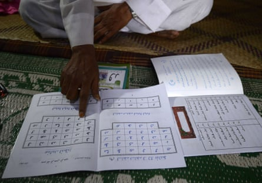

E very year, the world loses some of its 7,000 languages. Parents stop speaking them to their children, words are forgotten and communities lose the ability to read their own scripts. The rate of loss is quickening, from one every three months a decade ago to one every 40 days in 2019 – meaning nine languages die a year.
The UN’s culture agency, Unesco, says predictions that half the world’s languages will have died out by the end of the century are optimistic .
Some languages are disappearing with their last speakers, but thousands are endangered because they are not being spoken widely enough or are not being used in formal settings such as schools or workplaces.
A quiet fightback is under way in communities that feel their traditions are drowned out by the dominance of the most spoken languages globally, such as English, or by the official languages of their country.
Tochi Precious, a Nigerian living in Abuja who helps endangered language activists, says: “It pains my heart every day to see that a language is dying off, because it’s not just about the language, it’s also about the people.
“It’s also about the history associated with it and the culture. When it dies, everything linked to it dies off too.”
Igbo chiefs at Chinua Achebe’s funeral in 2013. The lauded writer embodied tensions between Nigerian oral traditions and colonial languages’ ability to reach a wider audience.Photograph: /AP
Precious says it was the community aspect that brought her to join efforts to save Igbo, a west African language that was predicted to become extinct by 2025. Ensuring there is a substantial record of words and meanings, how it is written and how it is used is key, according to campaigners such as Precious, who help others protect their languages through the organisation Wikitongues.
Amrit Sufi, who speaks the Angika language of India’s eastern state of Bihar, records videos to preserve its very oral culture, providing transcriptions and translations. “Documenting the folk songs was my way into getting to know my culture and doing my bit for it,” says Sufi, who has recorded dozens of such videos.
“It is urgent to document and to make it accessible where other people can see it – not just archived somewhere in a library,” she says. “Oral culture is disappearing as new generations are more inclined towards consuming industry-produced music rather than sitting in groups and singing.”
Sufi says that while Angika has about 7 million speakers, it is not used in schools and is rarely written down, which is accelerating its downfall. Some people are ashamed to speak it because of a perceived stigma attached to it, seeing Angika as inferior to dominant languages such as Hindi.
Sufi uses the same set of tools that Precious used for Igbo to upload videos of people speaking Angika. Wikipedia is favoured by language activists as a good way to upload media and build effective and affordable dictionaries.
Wikitongues, in particular, focuses on helping activists document languages using collective resources such as dictionaries and alternative-language Wikipedia entries. Wikitongues says it has supported activists to document about 700 languages in this way.
There are moves to use artificial intelligence to document languages by processing texts and feeding them into chatbots, though some have ethical concerns around these services “stealing” written material for training purposes.
Many language activists also create books, videos and recordings that can be widely shared. Community radio stations also have a long record of providing services in local languages.
For the Rohingya people from Myanmar, who now mostly live as refugees in Bangladesh after decades of persecution, concerns about their mostly oral language being lost because of their dispersal abroad have led to attempts to develop a written version.
Books written in the recently developed Hanifi script have now been distributed to more than 500 schools within the Rohingya refugee camps in Bangladesh, which host more than a million people.
The Rohingya scholar Muhammed Hanif with a textbook using the script he developed for the Rohingya language, which is based on Arabic letters.Photograph: Tauseef Mustafa/AFP/Getty
Sahat Zia Hero, who works with the Rohingya Cultural Memory Centre, says: “Using books translated into Rohingya language, as well as historical, political and educational books published in our Rohingya language, can significantly speed up the process of educating our community.
“If we prioritise teaching our language, especially to the younger generation, we can prevent the loss of both education and cultural identity for future generations. Otherwise, they will face the dual threat of losing their language and access to meaningful education.”
The museum provides a physical space for Rohingya culture. There are also efforts to use the script on social media, where most Rohingya write their language using Roman or Burmese lettering.
But after preservation, activists then have to persuade people to use a language – a major challenge.
Precious says that even though Igbo is one of Nigeria’s largest languages, many parents believe only English is useful for a child’s future.
“Parents saw that if you do not speak English you do not belong, you’re not part of the society, and it feels like you don’t know anything. So, no one was passing down the language any more – they used to say you’re not going anywhere with Igbo,” she says.
But efforts to save it have worked, she says, adding that it gives her pleasure to see the language thriving again.
“I have realised that, yes, a language can be endangered but then the people who speak the language can also fight for its survival. Because 2025 is already here, and definitely Igbo is not going extinct,” she says.